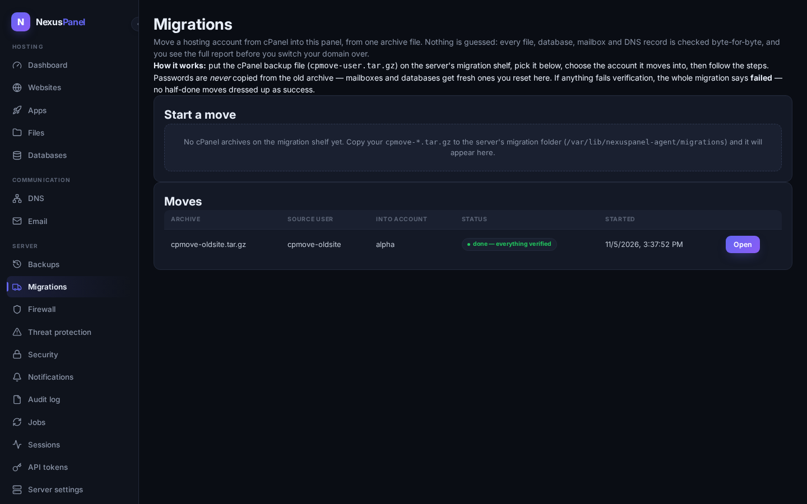
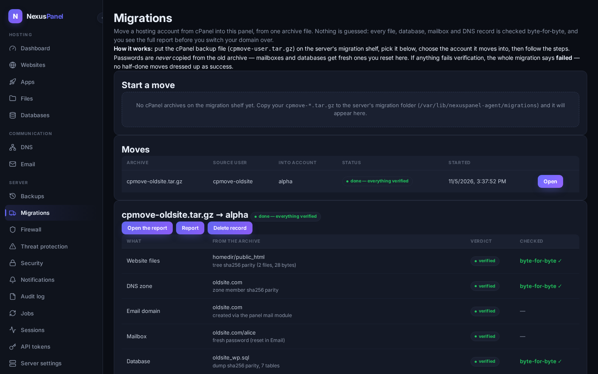
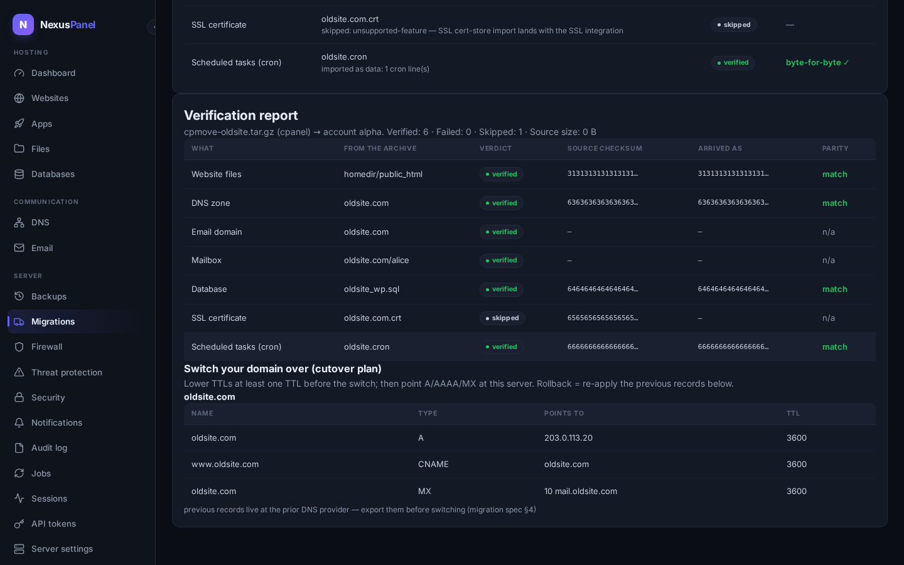

Migrations — bring a cPanel account over
Move a hosting account from cPanel to NexusPanel from one backup file.
You give the panel the archive (cpmove-user.tar.gz or a
full-account backup) and the account it should move into; the panel
looks inside, shows you exactly what it found, and moves everything
with a byte-for-byte check on every single item. Nothing is guessed,
nothing is half-done: if anything fails its check, the migration says
failed and shows you precisely what and why.

The four steps live in the panel
1. Look inside. Pick the archive from the migration shelf and the account it moves into, then press Look inside the archive. The panel reads the archive without touching your live files and lists what it found: website files, DNS zones, email domains and mailboxes, databases, SSL certificates and scheduled tasks — with sizes and fingerprints.
2. Show the plan. One button renders the exact move order — files first, then DNS, email, databases, the rest — with where each item will land. Nothing has moved yet; the plan also shows anything that will be skipped on purpose (for example an SSL certificate, which v1.0 verifies but does not install — see the honest list below).
3. Move everything now. The panel executes the plan. A move that is interrupted — the server restarted, the connection dropped — simply continues where it stopped the next time you press the button; finished items are never imported twice. Each item's progress appears in the table as it happens.
4. The report. Every item gets a verdict: verified means it was checked byte-for-byte against the archive, created means it was rebuilt fresh (mailboxes and databases — see passwords below), skipped always names its reason, and failed shows the checksum it expected next to the one it got. The report also produces your domain switch plan: which DNS records to point where, and how to roll back.
Passwords are never copied — and that is a feature

Old hosting archives contain password hashes, some of them years old. Copying them would copy their weaknesses too. So the migration creates every mailbox and database user with a fresh password that nobody sees — not even the panel stores it in a readable form. After the move, reset each mailbox password in Email and your database credentials in Databases, then update your site's configuration file with the new database password (the connection details page shows you where).
Switching your domain over

The report's cutover section lists the DNS records for the zones it moved, with the honest rule of thumb: lower your TTL at least one TTL before the switch, then point the records at this server. The records live in DNS zones the moment the migration finishes — the switch itself is your move (an automated push to third-party DNS providers is a later feature), and the report reminds you to keep an export of the old records as your rollback.
What the panel does not do (honest list)
- SSL certificates are verified and reported, but v1.0 does not install them into the certificate store — re-issue them free with SSL certificates after the move.
- Scheduled tasks (cron) are carried over as data you can read in the report; wiring them to run is the job center's business — add each job there.
- Sources other than cPanel (Plesk, DirectAdmin) and live pulls from a running cPanel server need credentials on the old box and are not in v1.0 — the file-based path here needs only the archive.
- Reseller account trees and mailing-list contents are not moved.